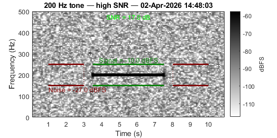
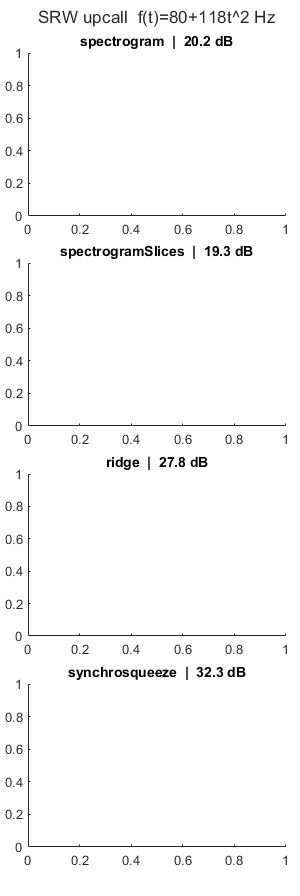
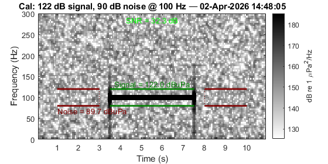
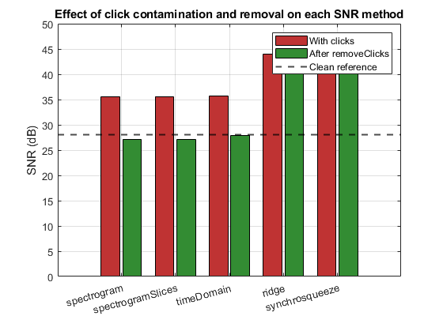
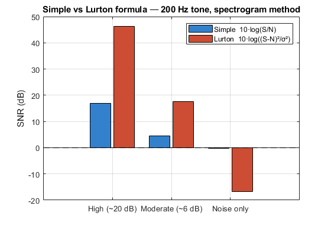
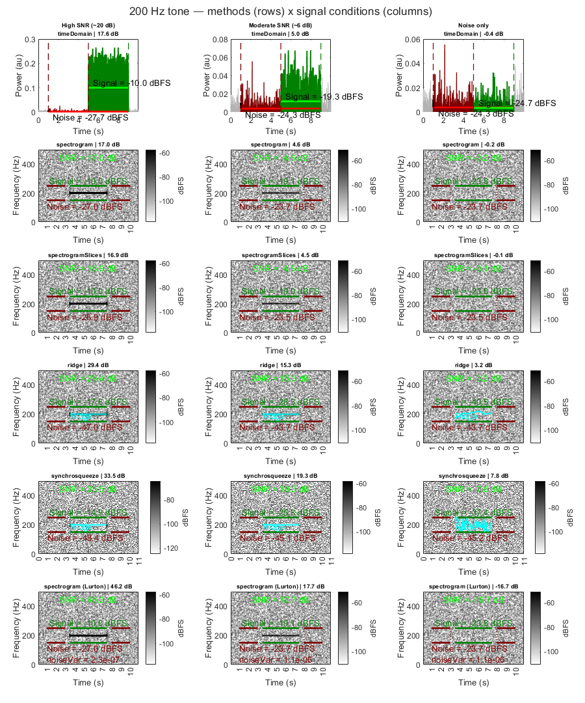

bsnr — Bioacoustic SNR Estimation: Gallery of Examples
This gallery demonstrates the main features of the bsnr package for estimating signal-to-noise ratio in bioacoustic recordings.
All examples use the same synthetic fixtures as the bsnr test suite (createTestFixture, createCalibratedTestFixture, makeSRWUpcall, makeClickAudio), ensuring consistency between documentation and tests.
To publish this gallery as HTML:
cd C:\analysis\bsnr\examples publish('bsnr_gallery.m', 'format', 'html', 'outputDir', 'html')
Requirements: MATLAB Signal Processing Toolbox. See README.md for the full dependency list and installation instructions.
Contents
Setup
Add bsnr source, examples, and tests directories to the path.
thisDir = fileparts(mfilename('fullpath')); sourceDir = fileparts(thisDir); testsDir = fullfile(sourceDir, 'tests'); addpath(sourceDir, '-begin'); addpath(thisDir, '-begin'); addpath(testsDir); % Add external dependencies if present for dep = {'longTermRecorders','annotatedLibrary','bsmTools','soundFolder'} candidate = fullfile('C:\analysis', dep{1}); if exist(candidate,'dir'), addpath(candidate); end end % Shared spectrogram display parameters (2000 Hz recordings) sp.pre = 1; sp.post = 1; sp.yLims = [0 500]; sp.freq = [150 250]; sp.noiseDelay = 0; sp.win = floor(2000 / 4); sp.overlap = floor(sp.win * 0.75); close all;
1. Basic SNR Estimation
snrEstimate measures the signal-to-noise ratio of a bioacoustic detection directly from a WAV file. The detection is described by a struct with fields soundFolder, t0, tEnd, freq, and channel. The noise window is positioned automatically adjacent to the detection.
Here we generate a synthetic WAV using createTestFixture — a 200 Hz tone at approximately 20 dB in-band SNR — and run the spectrogram method.
[annot1, cleanup1] = createTestFixture( ... 'signalRMS', 1.0, 'noiseRMS', 0.1, 'toneFreqHz', 200, ... 'freq', [150 250], 'durationSec', 4, ... 'classification', '200 Hz tone — high SNR'); p1 = struct('snrType', 'spectrogram', 'showClips', true, ... 'pauseAfterPlot', false, 'spectroParams', sp); figure('Position', [100 100 560 280], 'Name', 'Basic SNR estimation'); [snr1, rmsS1, rmsN1] = snrEstimate(annot1, p1); fprintf('SNR = %.1f dB | signal = %.3g | noise = %.3g\n', snr1, rmsS1, rmsN1); cleanup1();
Reading audio metadata for file 1/1: C:\Users\brian_mil\AppData\Local\Temp\annotSNR_test_20260402_144802_756\2026-04-02_14-48-02.wav SNR = 17.0 dB | signal = 0.0999 | noise = 0.00199

2. Frequency-Modulated Call — SRW Upcall
Ridge tracking and synchrosqueezing are specifically designed for frequency-modulated tonal calls. Here we use a synthetic Southern Right Whale upcall generated by makeSRWUpcall, following the quadratic frequency law f(t) = 80 + 118·t² Hz (sweeping 80→198 Hz over 1 s).
The cyan overlay on the ridge and synchrosqueeze tiles shows the tracked instantaneous frequency contour.
srwRate = 1000; srwFreq = [75 210]; bufferSec = 2; srwNoiseRMS = 0.1; [srwSig, ~] = makeSRWUpcall(srwRate, srwNoiseRMS); rng(7); bufSamps = round(bufferSec * srwRate); srwWideRMS = srwNoiseRMS * sqrt(srwRate/2 / diff(srwFreq)); fullAudio = [srwWideRMS*randn(bufSamps,1); srwSig; srwWideRMS*randn(bufSamps,1)]; fullAudio = fullAudio * (0.9/max(abs(fullAudio))); srwDir = fullfile(tempdir, sprintf('bsnr_gallery_srw_%s', datestr(now,'yyyymmdd_HHMMSS'))); mkdir(srwDir); srwStart = floor(now()*86400)/86400; audiowrite(fullfile(srwDir, [datestr(srwStart,'yyyy-mm-dd_HH-MM-SS') '.wav']), ... fullAudio, srwRate); srwCleanup = @() rmdir(srwDir,'s'); srwAnnot.soundFolder = srwDir; srwAnnot.t0 = srwStart + bufferSec/86400; srwAnnot.tEnd = srwStart + (bufferSec + 1.0)/86400; srwAnnot.duration = 1.0; srwAnnot.freq = srwFreq; srwAnnot.channel = 1; srwAnnot.classification = 'SRW upcall f(t)=80+118t^2 Hz'; srwSP = sp; srwSP.yLims = [0 300]; srwSP.freq = srwFreq; srwSP.win = floor(srwRate/4); srwSP.overlap = floor(srwSP.win * 0.9); fig4 = figure('Position', [190 190 300 896], 'Name', 'SRW upcall — FM methods'); tlo4 = tiledlayout(fig4, 4, 1, 'TileSpacing','compact','Padding','compact'); title(tlo4, 'SRW upcall f(t)=80+118t^2 Hz', 'interpreter','none'); for snrType = {'spectrogram','spectrogramSlices','ridge','synchrosqueeze'} nexttile(tlo4); p = struct('snrType', snrType{1}, 'showClips', true, ... 'pauseAfterPlot', false, 'spectroParams', srwSP); snr = snrEstimate(srwAnnot, p); title(gca, sprintf('%s | %.1f dB', snrType{1}, snr), 'interpreter','none'); end srwCleanup();
Reading audio metadata for file 1/1: C:\Users\brian_mil\AppData\Local\Temp\bsnr_gallery_srw_20260402_144804\2026-04-02_14-48-04.wav Warning: Clip too short for one FFT window — skipping plot. Warning: Clip too short for one FFT window — skipping plot. Warning: Clip too short for one FFT window — skipping plot. Warning: Clip too short for one FFT window — skipping plot.

3. Calibrated Acoustic Levels
When instrument metadata is supplied via params.metadata, the spectrogram colour scale shifts from normalised WAV units to calibrated acoustic units (dB re 1 µPa²/Hz), and the result table gains two columns:
- signalBandLevel_dBuPa — band-integrated signal level (dB re 1 µPa)
- noiseBandLevel_dBuPa — band-integrated noise level (dB re 1 µPa)
These are equivalent to bandpower(psdCal, f, freq, 'psd') from a fully calibrated PSD — correct for both tonal and broadband signals.
The instrument model is simpleFlatMetadata: flat 20 dB gain with realistic AC coupling (~5 Hz corner) and anti-aliasing (~5 kHz corner). Signal: 100 Hz tone at 122 dB re 1 µPa. Noise: 90 dB re 1 µPa (32 dB SNR).
% createCalibratedTestFixture generates a WAV with a tone at a known % acoustic level using the instrument metadata chain. The spectrogram % colour scale shows dB re 1 µPa²/Hz and signal/noise labels show dBuPa. % Signal: 122 dB re 1 µPa at 100 Hz. Noise: 90 dB re 1 µPa. SNR: 32 dB. [annot5, meta5, cleanup5] = createCalibratedTestFixture( ... 'signalLeveldB', 122, 'noiseLeveldB', 90, ... 'toneFreqHz', 100, 'freq', [80 120], 'durationSec', 4); sp5 = sp; sp5.freq = [80 120]; sp5.yLims = [0 300]; sp5.win = floor(meta5.sampleRate / 4); sp5.overlap = floor(sp5.win * 0.75); sp5.pre = 1; sp5.post = 1; sp5.noiseDelay = 0; figure('Position', [220 220 560 280], 'Name', 'Calibrated spectrogram'); try p5 = struct('snrType', 'spectrogram', 'showClips', true, ... 'pauseAfterPlot', false, 'metadata', meta5, 'spectroParams', sp5, ... 'freq', [80 120]); [snr5, rmsS5, rmsN5] = snrEstimate(annot5, p5); fprintf('SNR = %.1f dB | signal = %.1f dBuPa | noise = %.1f dBuPa\n', ... snr5, 10*log10(rmsS5), 10*log10(rmsN5)); catch err5 fprintf('Calibrated section error: %s\n', err5.message); for ii = 1:numel(err5.stack) fprintf(' at %s (line %d)\n', err5.stack(ii).name, err5.stack(ii).line); end end cleanup5();
Reading audio metadata for file 1/1: C:\Users\brian_mil\AppData\Local\Temp\annotSNR_cal_20260402_144804_519\2026-04-02_14-48-04.wav SNR = 32.3 dB | signal = 122.0 dBuPa | noise = 89.7 dBuPa

4. Click Contamination and Removal
Impulsive noise — echosounder pings, mechanical transients, or flow noise spikes — inflates power-based SNR estimates, particularly for snrTimeDomain and snrRidge which measure instantaneous amplitude.
removeClicks applies the PAMGuard soft amplitude gate:
w(x) = 1 / (1 + (x/threshold)^power)
with threshold = 3 * std(audio) and power = 1000 (effectively a hard gate). The left bars show SNR with clicks present; the right bars show SNR after removal. The dashed line marks the clean reference SNR.
Clicks are 5 ms sine bursts at the tone frequency, repeating every 1 s at 50× the signal amplitude — well above the detection threshold.
[sigWithClicks, sigClean, noiseAudio] = makeClickAudio( ... 2000, 10, 200, 1.0, 0.1, 1.0, 50.0); nfft = 2^nextpow2(floor(10/30/0.75*2000)); nOverlap = floor(nfft*0.75); sigCleaned = removeClicks(sigWithClicks, 3, 1000); % Reference SNR from clean signal [rSref, rNref] = snrTimeDomain(sigClean, noiseAudio, [150 250], 2000); refSNR = 10*log10(rSref/rNref); clickMethods = {'spectrogram','spectrogramSlices','timeDomain','ridge','synchrosqueeze'}; nM = numel(clickMethods); snrContam = nan(nM,1); snrCleaned = nan(nM,1); for k = 1:nM m = clickMethods{k}; switch m case 'spectrogram' [rS,rN] = snrSpectrogram(sigWithClicks, noiseAudio, nfft, nOverlap, 2000, [150 250], []); snrContam(k) = 10*log10(rS/rN); [rS,rN] = snrSpectrogram(sigCleaned, noiseAudio, nfft, nOverlap, 2000, [150 250], []); snrCleaned(k) = 10*log10(rS/rN); case 'spectrogramSlices' [rS,rN] = snrSpectrogramSlices(sigWithClicks, noiseAudio, nfft, nOverlap, 2000, [150 250], []); snrContam(k) = 10*log10(rS/rN); [rS,rN] = snrSpectrogramSlices(sigCleaned, noiseAudio, nfft, nOverlap, 2000, [150 250], []); snrCleaned(k) = 10*log10(rS/rN); case 'timeDomain' [rS,rN] = snrTimeDomain(sigWithClicks, noiseAudio, [150 250], 2000); snrContam(k) = 10*log10(rS/rN); [rS,rN] = snrTimeDomain(sigCleaned, noiseAudio, [150 250], 2000); snrCleaned(k) = 10*log10(rS/rN); case 'ridge' [rS,rN,~,~,~] = snrRidge(sigWithClicks, noiseAudio, nfft, nOverlap, 2000, [150 250], []); snrContam(k) = 10*log10(rS/rN); [rS,rN,~,~,~] = snrRidge(sigCleaned, noiseAudio, nfft, nOverlap, 2000, [150 250], []); snrCleaned(k) = 10*log10(rS/rN); case 'synchrosqueeze' [rS,rN,~,~,~] = snrSynchrosqueeze(sigWithClicks, noiseAudio, nfft, nOverlap, 2000, [150 250], []); snrContam(k) = 10*log10(rS/rN); [rS,rN,~,~,~] = snrSynchrosqueeze(sigCleaned, noiseAudio, nfft, nOverlap, 2000, [150 250], []); snrCleaned(k) = 10*log10(rS/rN); end end fig6 = figure('Position', [250 250 560 400], 'Name', 'Click removal'); x = 1:nM; bar(x - 0.2, snrContam, 0.35, 'FaceColor', [0.75 0.2 0.2], 'DisplayName', 'With clicks'); hold on; bar(x + 0.2, snrCleaned, 0.35, 'FaceColor', [0.2 0.55 0.2], 'DisplayName', 'After removeClicks'); yline(refSNR, '--k', 'LineWidth', 1.5, 'DisplayName', 'Clean reference'); hold off; set(gca, 'XTick', x, 'XTickLabel', clickMethods, 'XTickLabelRotation', 15); ylabel('SNR (dB)'); legend('Location','northeast'); title('Effect of click contamination and removal on each SNR method'); grid on;

5. Lurton vs Simple Formula
The Lurton (2002) formula, SNR = 10·log10((S−N)²/σ²_N), differs from the simple power ratio 10·log10(S/N) in two important ways:
- At high SNR it gives much larger values because the squared signal-noise difference amplifies the contrast.
- Near 0 dB SNR it can give large negative values, clearly flagging detections where no signal is present.
- It depends on the noise variance σ²_N, making it more sensitive to noise non-stationarity.
sigLevels = {'High (~20 dB)', 'Moderate (~6 dB)', 'Noise only'};
sigRMSVals = [1.0, 0.2, 0.0];
simpleSNRs = nan(1,3);
lurtonSNRs = nan(1,3);
for k = 1:3
[annotL, cleanupL] = createTestFixture( ...
'signalRMS', sigRMSVals(k), 'noiseRMS', 0.1, ...
'toneFreqHz', 200, 'freq', [150 250], 'durationSec', 4);
simpleSNRs(k) = snrEstimate(annotL, ...
struct('snrType','spectrogram','showClips',false,'useLurton',false));
lurtonSNRs(k) = snrEstimate(annotL, ...
struct('snrType','spectrogram','showClips',false,'useLurton',true));
cleanupL();
end
fig7 = figure('Position', [280 280 560 380], 'Name', 'Lurton vs simple formula');
x = 1:3;
bar(x - 0.2, simpleSNRs, 0.35, 'FaceColor',[0.2 0.5 0.8],'DisplayName','Simple 10·log(S/N)');
hold on;
bar(x + 0.2, lurtonSNRs, 0.35, 'FaceColor',[0.8 0.3 0.2],'DisplayName','Lurton 10·log((S-N)²/σ²)');
hold off;
yline(0, '--k', 'LineWidth', 1, 'HandleVisibility', 'off');
set(gca, 'XTick', x, 'XTickLabel', sigLevels);
ylabel('SNR (dB)');
legend('Location','northeast');
title('Simple vs Lurton formula — 200 Hz tone, spectrogram method');
grid on;
Reading audio metadata for file 1/1: C:\Users\brian_mil\AppData\Local\Temp\annotSNR_test_20260402_144809_460\2026-04-02_14-48-09.wav Reading audio metadata for file 1/1: C:\Users\brian_mil\AppData\Local\Temp\annotSNR_test_20260402_144809_517\2026-04-02_14-48-09.wav Reading audio metadata for file 1/1: C:\Users\brian_mil\AppData\Local\Temp\annotSNR_test_20260402_144809_553\2026-04-02_14-48-09.wav

6. Method Comparison Grid
This figure compares all six SNR methods (rows) across three signal conditions (columns): high SNR (~20 dB), moderate SNR (~6 dB), and noise only (0 dB). All signals are a 200 Hz tone in wideband noise.
The timeDomain row shows bandpass-filtered instantaneous power rather than a spectrogram — signal window in dark green, noise in dark red.
Reading across a row: how each method responds to changing SNR. Reading down a column: how methods differ for the same signal.
sigConfigs = {
'High SNR (~20 dB)', 1.0, 0.1
'Moderate SNR (~6 dB)', 0.2, 0.1
'Noise only', 0.0, 0.1
};
nSigs = size(sigConfigs,1);
gridMethods = {'timeDomain','spectrogram','spectrogramSlices', ...
'ridge','synchrosqueeze','spectrogram (Lurton)'};
nMethods = numel(gridMethods);
% Build one fixture per column and keep WAV path for audioread
annots = cell(nSigs,1);
wavPaths = cell(nSigs,1);
cleanups = cell(nSigs,1);
for s = 1:nSigs
[annots{s}, cleanups{s}] = createTestFixture( ...
'signalRMS', sigConfigs{s,2}, 'noiseRMS', sigConfigs{s,3}, ...
'toneFreqHz', 200, 'freq', [150 250], 'durationSec', 4, ...
'classification', sigConfigs{s,1});
d = dir(fullfile(annots{s}.soundFolder, '*.wav'));
wavPaths{s} = fullfile(annots{s}.soundFolder, d(1).name);
end
fig2 = figure('Position', [130 100 900 1080], 'Name', 'Method comparison grid');
tlo2 = tiledlayout(fig2, nMethods, nSigs, ...
'TileSpacing','compact','Padding','compact');
title(tlo2, '200 Hz tone — methods (rows) x signal conditions (columns)', ...
'interpreter','none');
nfftG = 2^nextpow2(floor(4/30/0.75*2000));
nOverlap = floor(nfftG*0.75);
freq = [150 250];
fs = 2000;
for k = 1:nMethods
m = gridMethods{k};
isLurton = strcmp(m, 'spectrogram (Lurton)');
isTD = strcmp(m, 'timeDomain');
snrType = 'spectrogram';
if ~isLurton, snrType = strtrim(m); end
for s = 1:nSigs
ax = nexttile(tlo2);
annot = annots{s};
if isTD
% Load audio with audioread using known fixture timing.
% createTestFixture: bufferSec = 0.5*dur + spectroBuffer(1) + safetyBuffer(2)
% With durationSec=4: bufferSec=5s, detection at [5 9]s in file.
% Noise window: immediately before detection (noiseDelay=0), same duration.
% Clip for plotTimeDomainPower: noise.t0 - pre to annot.tEnd + post.
[fullAudio, fsWav] = audioread(wavPaths{s});
durSec = annot.duration;
bufSec = 0.5*durSec + 1 + 2; % 5s for durationSec=4
detOn = round(bufSec * fsWav) + 1;
detOff = round((bufSec + durSec) * fsWav);
noiseOff = detOn - 1;
noiseOn = noiseOff - (detOff - detOn); % same length as detection
sigAudio = fullAudio(detOn:detOff);
noiseAudio = fullAudio(noiseOn:noiseOff);
[rmsS, rmsN, nVar] = snrTimeDomain(sigAudio, noiseAudio, freq, fsWav);
snr = 10*log10(rmsS/rmsN);
% Replicate processOne clip timing: noise.t0 - pre to annot.tEnd + post
preSec = sp.pre;
postSec = sp.post;
noiseT0 = annot.t0 - durSec/86400; % noise window start datenum
noiseTEnd = annot.t0; % noise window end = det start
clipT0 = noiseT0 - preSec/86400;
clipTEnd = annot.tEnd + postSec/86400;
clipOn = max(1, round((clipT0 - (annot.t0 - bufSec/86400))*86400*fsWav)+1);
clipOff = min(length(fullAudio), round((clipTEnd - (annot.t0 - bufSec/86400))*86400*fsWav));
clipAudio = fullAudio(clipOn:clipOff);
detStruct = annot;
detStruct.rmsLevel = 10*log10(rmsS);
noiseStruct = struct('t0', noiseT0, 'tEnd', noiseTEnd, ...
'rmsLevel', 10*log10(rmsN));
plotTimeDomainPower(clipAudio, clipT0, detStruct, noiseStruct, ...
freq, fsWav, rmsS, rmsN, nVar);
else
p = struct('snrType', snrType, 'useLurton', isLurton, ...
'showClips', true, 'pauseAfterPlot', false, 'spectroParams', sp);
snr = snrEstimate(annot, p);
end
title(ax, sprintf('%s | %.1f dB', m, snr), ...
'interpreter','none', 'FontSize', 7);
if k == 1
% Signal condition label above top row
title(ax, sprintf('%s\n%s | %.1f dB', ...
sigConfigs{s,1}, m, snr), ...
'interpreter','none', 'FontSize', 7);
end
end
end
for s = 1:nSigs, cleanups{s}(); end
Reading audio metadata for file 1/1: C:\Users\brian_mil\AppData\Local\Temp\annotSNR_test_20260402_144810_044\2026-04-02_14-48-10.wav Reading audio metadata for file 1/1: C:\Users\brian_mil\AppData\Local\Temp\annotSNR_test_20260402_144810_056\2026-04-02_14-48-10.wav Reading audio metadata for file 1/1: C:\Users\brian_mil\AppData\Local\Temp\annotSNR_test_20260402_144810_062\2026-04-02_14-48-10.wav

Summary
This gallery has demonstrated:
- Six SNR estimation methods and their sensitivity characteristics
- Method comparison across high, moderate, and zero SNR conditions
- Ridge and synchrosqueeze methods for FM tonal calls (SRW upcall)
- Calibrated acoustic levels (dB re 1 µPa) from instrument metadata
- Click contamination and removal using removeClicks
- Simple vs Lurton SNR formula comparison
Function reference: snrEstimate, snrSpectrogram, snrSpectrogramSlices, snrTimeDomain, snrRidge, snrSynchrosqueeze, removeClicks, spectroAnnotationAndNoise
Test suite: run('tests/run_tests.m')
%%%%%%%%%%%%%%%%%%%%%%%%%%%%%%%%%%%%%%%%%%%%%%%%%%%%%%%%%%%%%%%%%%%%%%%%%%%